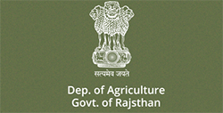

Skip to main content
Screen Reader Access
A+
A
A-
EN

Agriculture
Directorate of Horticulture
Rajasthan Agricultural Competitiveness Project
Rajasthan Olive Cultivation
Rajasthan State Warehousing
Rajasthan Kisan Ayog
Rajasthan State Agriculture Marketing Board
State Institute For Agriculture Management
Rajasthan State Seed & Organic Production Certification Agency
Rajasthan State Seed Corporation
Department Of Agriculture Marketing
Rajasthan Agricultural Competitiveness Project-portal
About Us
Project Components
Climate Resilient Agriculture
Improved of water-use efficiency
Technology transfer and market led advisory services
Livestock Strengthening and Management
Markets and Value Chains
Agri-business Promotion Facility (ABPF)/ Agribusiness Incubator
Market Infrastructure, Information and Intelligence Services
Farmer Organizations and Capacity Building
Farmer groups and participatory planning
Institution strengthening
Production risk management tools
Project Management Monitoring and Evaluation
Project management
MandE, convergence
Project Units
Steering Committee
Executive Committee
PMU
Project management
Finance Management
Environment and Social Management
Monitoring and Evaluation
Procurement Management
Governance and Accountability Action Plan
Management Information System (MIS)
Agri-business Promotion Facility (ABPF)
Safe Guards
Environment
Social
PIU
Agriculture
Horticulture
Watershed
Water Resources
Ground Water
Animal Husbandry
DPMU
Partner Agenicies
RAJUVAS
ARAVALI
Fedrations and CBOs
Watershed
Ground Water
Water Resources
Tenders and Advert
Expression of Interest
New
ProjectActivity
Agriculture
Horticulture
Animal Husbandry
Ground Water
Surface Water
Watershed
Contact Us
Guidelines
Rajasthan Olive Cultivation Ltd-portal
About ROCL
Corporate
About Company
Salient Features
Our Scenario
Services
Supply Olive Plants
Olive Consulting
Supply Vegetable Seedlings
Protected Cultivation Technical Knowhow
Sale Vegetables and Flowers
About Centre of Excellence
Technical Knowhow
Bio Mass
Gallery
Olive Fruit
Contact
Contact
Tenders
Orders and Circulars
Orders and Circulars
PDF
Olive Plants Rates
Olive Plants Rates
Sale Price of Olive fruit and Dragon Fruit
Rate
Rate
Online form for Olive Plantation
d
ABC
Rajolive Home
Directorate of Horticulture-portal
Photo Gallery
Feedback
Grievance
RTI
IHITC
Link
About us
Introduction
Development
Object & Activites
Organogram
Chief Vigilance officer
Organization Setup
Nurseries
Research station
District & Major Crops
Fruits
Vegetable
Spices & condiments
Major Crops Grown
Schemes
State Plan
National Horticulture mission
National mission on mission irrigation
National Solar Mission
National mission of medical plant
National Bamboo Mission
Rashtriya Krishi Vikash yojana
Individual Beneficiary Scheme
RAJHANS
Tender
Area Production
Terms & Conditon
Contract Directory
Sitemap
Adminstrative report
Agriculture Department-portal
Departmental Introduction
Introduction
Objective and functions
Directors and Commissioners
Office Setup
Organization Setup/Structure
Head Office
Regional Office
District Office
Agro-Climatic Zones
Departmental Contacts
Publications
Kheti-ri-Baatan-(E-Paper)
Prop Book
Administrative Progressives Report 2015-2016
Agriculture Policy
Kharif Special 2016-2017
Sucess Stories
Gram 2016
Programs and Schemes
Acts and Rules
Schemes and Programmes
Departmental Activities
Extension
Adaptive Trial Center
Quality Control
Agricultural Implements
Information Dissemination
Water Management
Monitoring and Evaluation
Right to information
Budget and Budget Information
Projects
SSDG
NEGP-A
Farmer Portal
E-Citizen
Departmental Directions
Notifications
Circular
Orders
Agriculture Inpust
Seeds
Fertilizer
Fertilizer Testing
District Level Licence For Sale Of Fertilizer
State Level Licence For Sale Of Fertilizers
Pesticides
Categorization License
Quality Control
List of State Level Seed Seller
Weather And Crop Insurance
Agriculture Statistics
Human Census
District Wise Total Area Sown
Year And Season Wise Rainfall
Latest Kharif And Rabi Activities
Tenders
Expression of Intrest
Guidelines
Requirements
Physical And Financial Progress
Employee Corner
Immovable Property Returns
Requirement
Posting and Transfer
Seniority List
State Insurance Provident Fund
Pis
District Wise Cug
Downloads
Reports And Documents
Hindi Fonts
Presentations
Important(Forms)
Others
Contact
Faq
Site Map
Feedback
Social Media
Facbook
Twitter
You tube
Kisan Corner
Contegency Crop Advisory
Help Desk
Faq
21 Mool Mantra Of Productivity
Package of Practices Pop
Pests And Disease Control
Citizen Charter
Site Map
Download
Reports and Documents
Download Hindi Fonts
Presentation
Important Forms
Map
Soil Fertility maps on GIS
Video Gallery
Contacts
Rajasthan State Warehousing Corporation-portal
Home
Board of Directors
About
Awards
Photo Gallery
Contact
Contact Warehouse
Contact Head Office
Introduction
Organizational Chart
Functions and Services
Centers
Number of Centers at mandi yard
Centers for Procurement
Farmers Facility
Farmers Facility I
Farmers Facility II
Center wise Storage capacity
Storage Tariff
Commodity Wise Storage Tariff
Rates on Area Basis
Computational of Weekly Rates
Year wise Utilization
Year wise Profit and loss
Tenders and circulars
Right to Information
Citizen Charter Act
Schemes
Income Tax Perform 2016
Downloads
Departmental Acts and Rules
Sitemap
Rajasthan Kisan Ayog-portal
Introduction
Objectives and Functions
Chairman and Members
Office setup
Chairman Biodata
Contact Directory
Events
Ayog reports
RTI
Circulars/Orders
Photo gallery
Rajasthan State Agriculture Marketing Board-portal
Board Profile
Introduction
Organisation Setup of RSAMB
Sanctioned posts of RSAMB
List of Adm., GM and Secy
Functions
Delegation of Powers
Achievements
Progress Report of RSAMB
Progress of Construction works of RSAMB
Reimbursement Claims of Sanction Rajeev Gandhi Krishak Sathi Yojna 2009
Resurgent Rajasthan 2015 - Agri Sector
Orders/Rules/Notifications
RSAMB (SERVICE) BYE-LAWS, 1977
RSAMB (SERVICE) Pension Rules 1995
RSAMB GPF Rules 1996
Raj. Agricultural Produce Markets Act, 1961
राजस्‍थान कृषि उपज मण्‍डी अधिनियम, 1961
Raj. Agricultural Produce Market Rules, 1963
राजस्थान कृषि उपज मंडी नियम, 1963
Employee Corner
Pension/Family Pension Orders
RSAMB Promotion Orders
RSAMB Seniority List
Immovable Property Return
PHM Activities
Commodity wise List of Traders
Rajasthan Spices Export Promotion Scheme 2015
Application Form for Export of Spices
Pamphlets
Fruit Vegetable and Flower Export Promotion Scheme 2016-17
DAM Profile
DAM information
Arrivals of 10 Years
KUMS and Sub Yards
Citizen Charter (DAM)
List of Mandi Chairman
Cadre Strength of DAM
Progress report
Act/Rules
Raj. Agricultural Produce Markets Act, 1961
राजस्थान कृषि उपज मंडी अधिनियम, 1961
Raj. Agricultural Produce Market Rules, 1963
राजस्थान कृषि उपज मंडी नियम, 1963
Raj. Mandi Employee Service Rules, 1975
Raj. Mandi Samiti Service (GPF) Rules, 1996
Yojna/Policy
राजीव गांधी कृषक साथी योजना 2009 (संशोधित आदेश)
राजीव गांधी कृषक साथी योजना 2009
निजी उप मण्डी यार्ड के संचालन के लिये निर्धारित प्रक्रिया एवं दिशा निर्देश
अचल सम्पत्ति आवंटन नीति, 2005 एवं मण्डी प्रांगण स्थानान्तरण नीति 2013
किसान कलेवा योजना 2014
महात्मा ज्योतिबा फूले मण्डी श्रमिक कल्याण योजना 2015
अचल सम्पत्ति आवंटन नीति, 2005 हेतु संशोधित आदेश दिनांक 28.03.2016
अचल सम्पत्ति आवंटन नीति, 2005 हेतु संशोधित आदेश दिनांक 09.03.2016
Order /Circular/Notification
Employee Corner
DAM Promotion Orders
DAM Seniority List
DAM Transfer Orders
Mandi Online
NIT Tender
Contact Us
R.S.A.M.B
D.A.M
K.U.M.S
Feedback
Agro Policy-2015
Photo Galary
Sitemap
State Institute of Agriculture Management-portal
Introduction
Introduction
Functions
Achievements
Rules/Notifications
Employee Corner
NIT Tender
Contact Us
Feedback
SIAM Faculty
Infrastructure and Facilities
About Us
Rajasthan State Seed and Organic Production Certification Agency-Portal
About us
Introduction
Objective
Seed Act 1966
Governing Body
Administrative Setup
Organization Chart
Acts, Rules and Notifications
Seed Certification
Process of Certification
Field Inspection
Processing
Sampling
Seed Testing
Packing of Seed
Re-Sampling and Hand-Picking
Revocation of Certificate
Revalidation
Storage
Hybrid Seed Production
Seed Producers
Seed Processing Plants
Calendar of Operations
Certification Charges
Appellate Authority
Organic Production Certification
About ROCA
Organic Certification Steps
Farmers Crop Certification
Organic Food Processing and Handing
Wild Harvest Collection
Organic Beekeeping/ Apiculture
Organic Input Approval
Certification Charges
Organic Certification Progress
Downloads
Seed Certification
Organic Production Certification
Publications
Financial Report
Annual Progress Report
RTI
Contact us
Rajasthan State Seed Corporation Limited-portal
Photo gallery
Downloads
Office orders/circulars
Requirements
Tenders
Farms
Feedback
Finance
Financial scenario
Annual return
Marketing
Certified seed sale
Our offices
Seed Marketing
Seed production
Organizational structure
Board of directors
Chairman and their tenure
M.D. and their tenure
Officers at HQ/Units
Products
RTI Act
Test
Seed Processing
Rajasthan Agriculture Marketing-portal
About Us
Overview
State at a glance
State Agriculture Marketing Profile
Mandi Profile
Organization Structure
Achievements
Pragati Prativedan
Policy and Schemes
Programs and Schemes
Policy
Notifications and Circulars
Notification/orders
RTI
Tenders
Media Gallery
Bhilwara Mandi Scenario
Chomu Mandi Scenario
Directorate of Agriculture Marketing Training
GRAM 2016
IITF DELHI 2016
Khairthal Mandi
LIVE Demo Presentation of 8 States
Pilibanga Mandi Scenario
RIMMS in IT Day 2016
Udaipur Grain Mandi Scenario
Udaipur Collector Visited 15-07-2015
Related Links